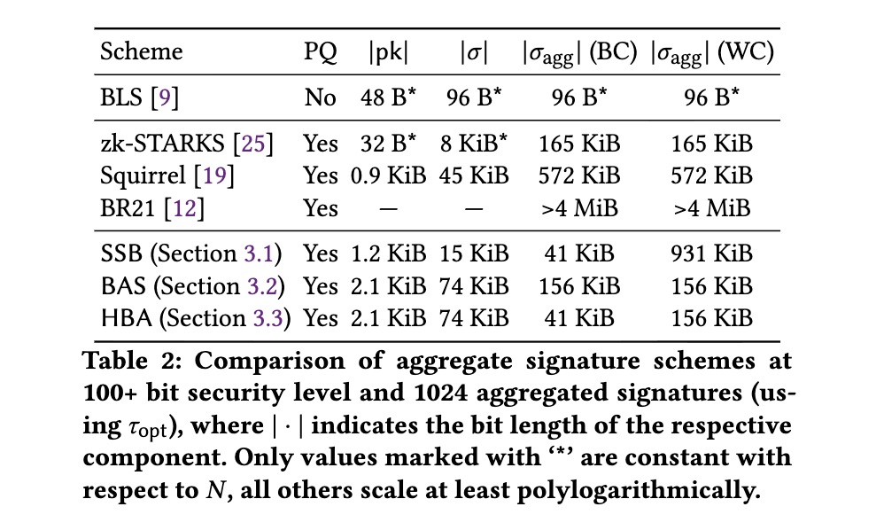

Quentin Kniep, Roger Wattenhofer
ASIA CCS 2024
Efficient (non-interactive) aggregate signature schemes in the post-quantum setting are still missing. We define the concept of Byzantine fault-tolerant aggregate signature schemes. This notion fills a middle-ground between interactive and non-interactive signature aggregation. Signers are required to interact but some may fail or misbehave at any point in the signing protocol.
Then, we provide efficient constructions of such schemes based on lattice assumptions. We show their security in the programmable random oracle model. For N participants they tolerate up to N − 1 Byzantine failures assuming a correct aggregator, and ⌊(N + 1)/3⌋ failures in general. Our final construction is more efficient than Squirrel, the state-of-the-art non-interactive scheme, which in contrast to ours is also just a few-time signature scheme. Asymptotically signature sizes are polylogarithmic in the total number of participants. In the failure-free case our scheme becomes essentially equivalent to — and thus just as efficient as — a state-of-the-art interactive aggregate signature schemes from lattice assumptions. At the same time we make weaker assumptions on the signing protocol.
Finally, we parameterize, implement, and evaluate our signature scheme. We find that it has aggregate signatures of sizes (i) between 41 KiB (best case) and 151 KiB (worst case) for 1000 signers, (ii) between 59 KiB (best case) and 399 KiB (worst case) for 10,000 signers, and (iii) between 75 KiB (best case) and 750 KiB (worst case) for 100,000 signers. Verification times for our Rust implementation are in practice faster than those of a state-of-the-art implementation of aggregate BLS signatures, at the cost of slower signature aggregation, both by about one order of magnitude.

@inproceedings{kniep2024ByzantineFault-tolerant,
author = {Q. Kniep and Roger Wattenhofer},
title = {Byzantine Fault-Tolerant Aggregate Signatures},
booktitle = {ASIA CCS 2024},
year = {2024}
}